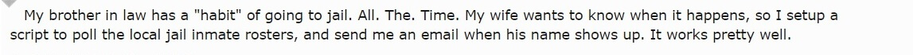

Lời mở đầu
Bạn học lập trình để làm gì? Học Python để làm gì? Trước khi bắt đầu bài viết này, mình đã có một vài cuộc nói chuyện cũng như tham khảo ý kiến của nhiều người, bao gồm cả những bạn đã và đang là lập trình viên và những bạn đang theo học hoặc làm việc những ngành nghề không hề liên quan đến lập trình, câu trả lời cho lý do các bạn ấy học và sử dụng Python khá đa dạng, có thể rất đơn giản là hứng thú, cũng có thể là do yêu cầu công việc, hoặc đơn giản hơn lý do có thể là muốn học lập trình nên google xem nên học ngôn ngữ nào, thấy có bạn nói đến Python vậy là học Python.
Sau đây mình tổng hợp lại một số công việc mà Python có thể giải quyết được trên thực tế:
Phát triển web Phython có thể được dùng để phát triển backend cho các ứng dụng web, một số framework được tạo ra giúp cho lập trình viên có thể dễ dàng phát triển ứng dụng web như: Django, Flask, Pyramid.
Tính toán khoa học, toán học, học máy Python rất được cộng đồng các nhà khoa học máy tính ưa chuộng, NumPy, SciPy, pandas, matplotlib là những thư viện tiêu biểu phục vụ cho nhu cầu tính toán khoa học cũng như học máy (machine learning) và được sử dụng vô cùng rộng rãi.
Các công việc tự động hóa hệ thống, quản lý hệ thống Python cho phép quản trị viên hệ thống dễ dàng tạo các script tự động chạy cũng như quản lý hệ thống đang vận hành. Fabric, Salt, Psutil là các thư viện tiêu biểu.
Đánh giá bảo mật và kiểm thử thâm nhập Mình không có nhiều chuyên môn về phần này, tuy nhiên được biết là cũng có rất nhiều tools được viết bằng Python cho mục đích kiểm tra và đánh giá bảo mật. Những thư viện có thể kể đến như: Scapy và twill
Viết script Python được nhúng mặc định trong rất nhiều bản phân phối Linux cũng như nhiều phần mềm như FreeCAD, Blender, Maya, Gimp giúp cho người dùng có thể tự tạo các script một cách đơn giản và nhanh chóng.
Dĩ nhiên những gì mà Python làm được không chỉ giới hạn ở danh sách trên. Đôi khi bạn sẽ bị bất ngờ vì những ứng dụng Python có thể làm được như ví dụ sau:

Học Python có khó? Đối với mình thì Python là một ngôn ngữ rất dễ tiếp cận, ngay cả khi vốn kiến thức về lập trình của bạn rất ít hoặc hoàn toàn không có thì bạn vẫn có thể sử dụng các câu lệnh cơ bản của Python một cách dễ dàng sau 1 vài giờ học.
Nếu bạn chưa hề có kiến thức về lập trình và thấy Python khó, mình có thể đảm bảo rằng so với các ngôn ngữ khác, học Python thực sự dễ hơn rất nhiều. Code Python dễ đọc dễ viết và dễ gợi nhớ, cùng với đó là cú pháp thân thiện, kiểu dữ liệu linh hoạt giúp cho người học nhanh chóng làm quen và dễ dàng tập trung hơn vào việc học giải thuật. Rất nhiều lập trình viên có kinh nghiệm khuyến khích sử dụng Python là ngôn ngữ lập trình đầu tiên để học.
Nếu đã giỏi một ngôn ngữ rồi, có cần thiết phải học Python không? Tất nhiên nếu bạn thỏa mãn rồi thì không cần thiết phải học, nếu chưa, hãy thử, Python thực sự giải quyết được nhiều vấn đề mà các ngôn ngữ lập trình khác mất rất nhiều thời gian và công sức để giải quyết.
Hạn chế của Python là gì? Cho tới thời điểm này có lẽ tốc độ thực thi chương trình là hạn chế lớn nhất mà Python gặp phải. Bạn không thể đòi hỏi một ngôn ngữ thông dịch với kiểu dữ liệu linh hoạt phải chạy nhanh như ngôn ngữ biên dịch với kiểu chặt chẽ.
Bài viết này mình sẽ không đi sâu vào những việc như cài đặt Python như thế nào, chạy Python như thế nào ... đã có rất nhiều bài viết, hướng dẫn cho việc này rồi. Mình sẽ cố gắng tổng hợp lại những thứ cơ bản nhất để mọi người có thể bắt đầu với Python.
Cơ bản
Biến
Hiểu đơn giản về biến thì đây là một phần tử nhớ để lưu giá trị. Để tạo một biến trong Python:
x = 1
Ta đã tạo ra biến x có giá trị bằng 1, biến trong Python không chỉ để dùng lưu trữ giá trị số, nó có thể được dùng để lưu các giá trị khác nữa. Biến cũng không cần phải được khai báo, chỉ cần gán và dùng, trình thông dịch sẽ tự động xử lý việc khai báo và quản lý biến.
a = "một chuỗi ký tự"
some_numbers = 123456 # số nguyên
some_floats = 1.23 # số thập phân
true_bool = False # giá trị boolean (chỉ có 2 giá trị đúng hoặc sai - True / False)
Biến trong Python thường được đặt tên theo quy tắc lower_case_with_underscores Biến cũng có thể được thay đổi giá trị bằng cách gán cho giá trị khác:
x = 2
Ta đã có khái niệm cơ bản về biến, đối với Python, bạn không cần phải chú ý nhiều đến các vấn đề sâu hơn về bộ nhớ như: con trỏ, địa chỉ ... như một số ngôn ngữ khác như C, C++
Việc gán giá trị cho biến là một chiều,
1 = xlà câu lệnh lỗi.
Python không có khái niệm hằng số hay constant. Nếu bạn muốn dùng hằng số, chỉ cần đơn giản tạo một biến và đừng thay đổi giá trị của nó. ●_●

Câu lệnh điều kiện
Câu lệnh điều kiện duy nhất trong Python bạn cần biết đến đó là if ... else ..., một điều kiện sẽ được kiểm tra khi thực hiện lời gọi if, nếu điều kiện đó trả về giá trị đúng thì khối câu lệnh sau mệnh đề if sẽ được thực hiện, nếu điều kiện đó trả về giá trị sai thì khối câu lệnh sau mệnh đề else sẽ được thực hiện.
a = 2
if a < 1:
print("a < 1")
else:
print("a >= 1")
Ở đây hàm print() là hàm in giá trị ra console trong Python.
Trong Python, các khối câu lệnh được sắp xếp theo tab hoặc dấu cách thẳng hàng từ trên xuống (2 hoặc 4 dấu cách), nếu bạn tự ý đặt tab hoặc các khối câu lệnh không thẳng hàng thì trình biên dịch sẽ báo lỗi.
Câu lệnh điều kiện có thể thiếu mệnh đề else:
a = 2
if a < 1:
print("a < 1")
Hoặc lồng nhiều điều kiện với nhau:
a = 2
if a < 1:
print("a < 1")
elif a < 2:
print("a < 2")
elif a < 3:
print("a < 3")
else:
print("a >= 3")
Fun fact: Python không cần switch ... case vì if ... else là đủ. Official answer.

Vòng lặp
Bạn dĩ nhiên là không muốn viết đi viết lại 100 dòng code vì muốn chạy câu lệnh 100 lần với 100 biến số khác nhau, bạn cũng không muốn viết code duyệt 1000 phần tử trong một mảng bằng cách viết đi viết lại câu lệnh 1000 lần. Trong Python, while và for là 2 vòng lặp cơ bản nhất.
Vòng lặp while
Nếu điều kiện lặp là đúng (True) thì khối câu lệnh trong vòng lặp sẽ được thực hiện đến khi nào điều kiện lặp là sai (False) hoặc gặp break.
a = 1
while a < 10:
print(a)
a += 1
Ở đây a < 10 là điều kiện lặp, khi giá trị của a tăng lên mỗi lần lặp tới khi a == 10 thì điều kiện a < 10 không còn đúng nữa, lúc đó vòng lặp kết thúc.
Nếu điều kiện lặp luôn đúng, ta sẽ có vòng lặp vô hạn, khi lập trình bạn nên cẩn thận để tránh trường hợp vòng lặp rơi vào vô hạn dẫn đến việc chương trình không thể tiếp tục chạy.
a = 10
while a > 9:
print("Tôi sẽ có người yêu sau khi vòng lặp này kết thúc")
Vòng lặp for
Cấu trúc của vòng lặp for được thể hiện như sau:
for biến_lặp in [danh sách]:
# nội dung lệnh thực hiện trong mỗi lần lặp
Giá trị cả phần tử đầu tiên của danh sách (dữ liệu kiểu danh sách , string ...) sẽ được gán cho biến_lặp, tiếp theo là thực hiện lệnh bên trong vòng lặp, sau đó là phần tử thứ 2, thứ 3 ... đến hết chuỗi hoặc gặp break

Một vài ví dụ về for loop:
#!/usr/bin/python
# Example from https://www.tutorialspoint.com/python/python_for_loop.htm
for letter in 'Python':
print 'Current Letter :', letter
fruits = ['banana', 'apple', 'mango']
for fruit in fruits:
print 'Current fruit :', fruit
print "Good bye!"
Kết quả in ra:
Current Letter : P
Current Letter : y
Current Letter : t
Current Letter : h
Current Letter : o
Current Letter : n
Current fruit : banana
Current fruit : apple
Current fruit : mango
Good bye!
Trong Python, vòng lặp for rất hay được sử dụng cùng với hàm range(). range() là hàm built-in của Python cho phép trả về một chuỗi số mà bạn có thể duyệt qua nó, các tham số đầu vào bao gồm: giá trị bắt đầu start, giá trị kết thúc stop, và bước đếm step. Các tham số này có thể có hoặc không cần thiết phải thiết lập khi gọi hàm, mời bạn xem ví dụ sau đây để hiểu thêm:
>>> list(range(10)) # range(stop)
[0, 1, 2, 3, 4, 5, 6, 7, 8, 9]
>>> list(range(1, 11)) # range(start, stop)
[1, 2, 3, 4, 5, 6, 7, 8, 9, 10]
>>> list(range(0, 30, 5)) # range(start, stop[, step])
[0, 5, 10, 15, 20, 25]
>>> list(range(0, 10, 3))
[0, 3, 6, 9]
>>> list(range(0, -10, -1))
[0, -1, -2, -3, -4, -5, -6, -7, -8, -9]
>>> list(range(0))
[]
>>> list(range(1, 0))
[]
Trên thực tế, ở Python 3, range được định nghĩa như một kiểu dữ liệu chứ không phải là một hàm trả về danh sách iterator. Bạn có thể đọc phần tiếp theo và thử sử dụng kiểu range như một list và sẽ thấy khác biệt.
Kiểu dữ liệu danh sách: List
Thay vì chỉ lưu trữ một giá trị như biến, list cho phép lưu một dãy các giá trị. List trong Python tương đương với Mảng trong các ngôn ngữ lập trình khác, điểm khác biệt là các phần tử trong một List của Python có thể có nhiều kiểu dữ liệu khác nhau. Cách cơ bản nhất để tạo một list như sau:
danh_sach = [1, 3, 5, 8, 10, 3]
danh_sach_1 = ["a", "b", "hi", (1, 2), None, True]
Để truy cập lấy giá trị của một phần tử trong List ta dùng index của phần tử đó, có thể hiểu index ở đây như vị trí của phần tử trong 1 list, cần lưu ý là chỉ số index này được bắt đầu từ 0, tính từ cuối chuỗi thì index được tính từ -1.
>>> print(danh_sach[0])
>>> 1
>>> print(danh_sach_1[2])
>>> "hi"

Lấy phần tử cuối
>>> danh_sach[-1]
3
Nếu truy xuất vượt giới hạn của list, exception IndexError sẽ được raise:
# Looking out of bounds is an IndexError
danh_sach[14]
Traceback (most recent call last):
File "<stdin>", line 1, in <module>
IndexError: list index out of range
Để tìm hiểu thêm về exception trong Python, mời bạn tham khảo thêm bài viết này: Python Errors and Exceptions handling
Python cho phép truy cập list con của một list sử dụng slice (mình để nguyên vì không tìm được dịch nghĩa tương ứng). Để tránh phải viết đi viết lại nhiều lần mình sẽ mô tả lại bằng comment trong code tương ứng bên dưới. Về cơ bản, quy tắc ở đây là:
danh_sach_con = danh_sach[bắt_đầu:kết_thúc:bước_nhảy]
>>> danh_sach = [1, 3, 5, 8, 10, 3]
>>> danh_sach[2:3] # từ index = 2 tới trước index = 3
[5]
>>> danh_sach[2:9] # từ index = 2 tới trước index = 9, chú ý: index thứ 2 có thể vượt ra ngoài chuỗi (out of bound) nhưng không báo lỗi
[5, 8, 10, 3]
>>> danh_sach[2:] # bỏ phần tử đầu, chỉ lấy từ index = 2 tới hết
[5, 8, 10, 3]
>>> danh_sach[-2:] # từ index = -2 tới hết
[10, 3]
>>> danh_sach[:-2] # từ đầu tới trước index = -2
[1, 3, 5, 8]
>>> danh_sach[::2] # lấy các phần tử có index cách nhau 2 đơn vị bắt đầu từ index = 0
[1, 5, 10]
>>> danh_sach[::-1] # tạo danh sách ngược lại
[3, 10, 8, 5, 3, 1]
>>>
Để thêm một phần tử vào trong list chúng ta sử dụng append(), phần tử thêm vào sẽ nằm ở cuối danh sách. Nếu muốn thêm phần tử mới vào một vị trí xác định, sử dụng insert(index, value)
>>> danh_sach.append(9)
>>> print(danh_sach)
[1, 3, 5, 8, 10, 3, 9]
>>> danh_sach.insert(1, 3)
>>> danh_sach
[1, 3, 3, 5, 8, 10, 3, 9]
>>>
Xóa phần tử:
>>> print(danh_sach)
[1, 3, 5, 8, 10, 3, 9]
>>> danh_sach.pop() # xóa phần tử cuối cùng
9
>>> danh_sach.remove(3) # xóa phần tử đầu tiên tìm thấy (xóa số 3 đầu tiên)
>>> danh_sach
[1, 5, 8, 10, 3]
>>> danh_sach.remove(9) # lỗi do 9 không nằm trong danh sách
Traceback (most recent call last):
File "<stdin>", line 1, in <module>
ValueError: list.remove(x): x not in list
>>>
Khi bạn muốn tạo một list mới và gán với giá trị của list cũ danh_sach_ref = danh_sach thì thực chất không có list mới nào được tạo cả, Python chỉ sao chép lại tham chiếu chứ không tạo danh sách thực, vì vậy cả danh_sach_ref và danh_sach đều trỏ vào cùng một danh sách. Vì lý do đó, việc thêm, sửa, xóa dữ liệu trên bất cứ danh sách nào danh_sach_ref và danh_sach đều ảnh hưởng tới danh sách kia vì chúng thực chất là một.
Slicing cho phép tạo danh sách mới hoàn toàn một cách rất dễ dàng:
>>> danh_sach_ref = danh_sach[:]
>>> danh_sach_ref is danh_sach
False
>>> danh_sach_2 = danh_sach # danh_sach_2 thực chất là reference của danh_sach
>>> danh_sach_2 is danh_sach
True
>>> danh_sach # Kiểm tra lại giá trị của các danh sách
[1, 5, 8, 10, 3]
>>> danh_sach_2
[1, 5, 8, 10, 3]
>>> danh_sach_ref
[1, 5, 8, 10, 3]
>>> danh_sach_ref.pop() # Thay đổi danh_sach_ref
3
>>> danh_sach # danh_sach không thay đổi
[1, 5, 8, 10, 3]
>>> danh_sach_2.pop() # Thay đổi danh_sach_2
3
>>> danh_sach # danh_sach bị thay đổi theo
[1, 5, 8, 10]
>>>
Ngoài slicing, chúng ta có thể sử dụng list(), list.copy() (python verion 3.3 trở lên):
new_list = old_list.copy()
new_list = list(old_list)
Gộp 2 danh sách, mở rộng danh sách:
>>> danh_sach + danh_sach_ref # giá trị danh_sach và danh_sach_ref không thay đổi
[1, 3, 5, 8, 10, 1, 5, 8, 10]
>>> danh_sach.extend(danh_sach_3) # khi extend thì giá trị của danh_sach bị thay đổi
>>> danh_sach
[1, 3, 5, 8, 10, 1, 5, 8, 10]
Kiểm tra nếu phần tử nằm trong danh sách:
>>> 1 in danh_sach
False
Độ dài của danh sách:
>>> danh_sach
[1, 3, 5, 8, 10, 1, 5, 8, 10]
>>> len(danh_sach)
9
Ngoài list ra chúng ta còn có các kiểu dữ liệu danh sách tương tự khác như dictionary và tuple sẽ được giới thiệu ngay tiếp sau đây.
Kiểu dữ liệu tuple
Tuple trong Python là một kiểu dữ liệu lưu trữ các đối tượng mà giá trị không thay đổi (immutable). Về cơ bản thì tuple cũng có những đặc tính khá giống như kiểu dữ liệu list ở phần trước.
Để khai báo một tuple thì mọi người sử dụng cú pháp sau:
days = ('Sun', 'Mon', 'Tue', 'Wed' , 'Thu', 'Fri', 'Sat')
Khác với list, tuple không dùng {} mà sử dụng các dấu ngoặc đơn (), các đối tượng được ngăn cách bởi dấu phẩy. Giống như list, chỉ mục của tuple cũng bắt đầu từ 0. Thực tế thì nếu bạn khai báo 1 biến nhiều phần tử mà không đặt chúng trong () thì Python vẫn ngầm hiểu đó là 1 tuple, tuy niên cách viết này không được tường minh cho lắm. Bạn cũng có thể tạo tuple rỗng và tuple chỉ chứa 1 phần tử.
days = 'Sun', 'Mon', 'Tue', 'Wed' , 'Thu', 'Fri', 'Sat'
free = () # empty tuple
payday = (25,) # 1 item tuple
Ngoài cách khai báo như trên thì một tuple cũng có thể được tạo ra từ 1 kiểu dữ liệu khác bằng constructor tuple():
>>> tup_1 = tuple([1, 2, 3])
>>> tup_1
(1, 2, 3)
>>> type(tup_1)
<class 'tuple'>
>>>
Việc truy cập lấy phần tử theo chỉ mục, slicing trong tuple cũng tương tự như ở list, mình sẽ chỉ nhắc lại sơ qua:
>>> days[3]
'Wed'
>>> days[3:6]
('Wed', 'Thu', 'Fri')
>>> days[-2]
'Fri'
Các phần tử trong tuple có thể không cùng kiểu, thậm chí các tuple có thể lồng nhau. Ngoài ra bạn có thể gộp 2 tuple lại với nhau:
>>> tuple_2 = ('Hi', {"today":"Sun"}, [1, 2, 3, 4, 5], (2, 4, 5))
>>> tuple_2
('Hi', {'today': 'Sun'}, [1, 2, 3, 4, 5], (2, 4, 5))
>>> day1 = ('monday', 'tuesday', 'wednesday')
>>> day2 = ('thursday', 'friday', 'saturday' , 'sunday')
>>> day1 + day2
('monday', 'tuesday', 'wednesday', 'thursday', 'friday', 'saturday', 'sunday')
Kiểu dữ liệu dictionary (dict)
Dữ liệu kiểu dictionary trong Python là một tập các cặp khóa và giá trị (key and value) không có thứ tự. Value trong dictionary có thể là bất kỳ kiểu dữ liệu nào nhưng key phải là một kiểu dữ liệu không thay đổi (immutable) như chuỗi, số hoặc tuple, trong trường hợp lỗi kiểu của Key, exception TypeError sẽ được trả về. Về mặt cú pháp, key và value được phân biệt bởi một dấu hai chấm (:). Các phần tử phân biệt nhau bởi một dấu phảy (,) và tất cả các cặp key:value được bao lại bên trong một cặp ngoặc móc ({}). Key trong một dictionary cũng phải là duy nhất, nghĩa là không có 2 phần tử có key giống nhau. Trong trường hợp khi khởi tạo dictionary trình thông dịch bắt gặp 2 key giống nhau thì chỉ có 1 key được chấp nhận, value tương ứng sẽ là value của khai báo sau. Việc truy cập trong dictionary được thực hiện bằng cách tra cứu key tương ứng với value:
# https://www.tutorialspoint.com/python/python_dictionary.htm
dict = {'Name': 'Zara', 'Age': 31, 'Class': 'First', 'Name': 'Hyewon'}
print("dict['Name']: ", dict['Name']) # Hyewon
print("dict['Age']: ", dict['Age']) # 31
Trong trường hợp key không tồn tại, Exception KeyError sẽ được trả về:
>>> dict = {'Name': 'Zara', 'Age': 7, 'Class': 'First'}
>>> print "dict['Alice']: ", dict['Alice']
dict['Alice']:
Traceback (most recent call last):
File "test.py", line 4, in <module>
print "dict['Alice']: ", dict['Alice'];
KeyError: 'Alice'
Chú ý là bạn không thể truy cập dictionary thông qua chỉ mục (index) giống như list và tuple, vì vậy các phương thức như slicing cũng không được hỗ trợ. Để cập nhật dữ liệu trong dictionary như thêm key:value mới, sửa đổi một phần tử đã tồn tại, xóa một phần tử ... bạn bắt buộc phải truy cập phần tử đó thông qua key:
dict = {'Name': 'Zara', 'Age': 7, 'Class': 'First'}
dict['Age'] = 8; # update existing entry
dict['School'] = "DPS School"; # Add new entry
del dict['Class']
print("dict['Age']: ", dict['Age'])
print("dict['School']: ", dict['School'])
dict.clear() # Remove all entries
del dict # Remove dictionary
Đối với các kiểu dữ liệu danh sách, nếu không chứa dữ liệu thì giá trị của nó được đánh giá bằng False.
bool(0) # => False
bool("") # => False
bool([]) # => False
bool({}) # => False
bool(()) # => False
Dữ liệu kiểu set
Có thể coi set là cấu trúc dữ liệu tương đương với tập hợp trong toán học, cho phép thể thêm, xóa các phần tử, duyệt (iterate) từng phần tử, thực hiện các phép toán tương tự như tập hợp (hợp, giao, so sánh). Bên cạnh đó, bạn có thể kiểm tra xem một phần tử thuộc về một set hay không.
Set trong Python là tập hợp các phần tử không có thứ tự, các phần tử trong set là duy nhất, phân cách nhau bằng dấu phẩy và nằm trong dấu {}. Một điều quan trong cần phải nhắc lại là không giống như list, nơi các phần tử được lưu trữ dưới dạng danh sách thứ tự, thứ tự của các phần tử trong set là không xác định.
Bất kỳ loại dữ liệu bất biến (immutable) nào cũng có thể là một phần tử của một set: số, chuỗi, tuple. Các kiểu dữ liệu có thể thay đổi (changeable) không thể là các phần tử của tập hợp. List không thể là phần tử của set (nhưng có thể), và một set cũng không thể là một phần tử của set khác.
sample_set = {1, 2, 3, 4, 5, 10}
sample_set = set('hello') # {"h", "e", "l", "o"}
Khi làm việc với set, không cần quan tâm thứ tự các phần tử trong set:
>>> A = {1, 2, 3}
>>> B = {3, 2, 3, 1}
>>> A == B
True
>>>
Như đã nói ở trên, kiểu set trong Python khá tương đồng với tập hợp trong toán học. Mình tổng hợp lại các phép toán có thể thực hiện được trên sets ở dưới đây:
# https://learnxinyminutes.com/docs/vi-vn/python3-vi/
# Tương tự như khóa của từ điển, phần tử của một tập hợp cũng phải là immutable
invalid_set = {[1], 1} # => Sinh ra biệt lệ TypeError: unhashable type: 'list'
valid_set = {(1,), 1}
# Thêm một phần tử vào tập hợp
filled_set.add(5) # filled_set is now {1, 2, 3, 4, 5}
# Thực hiện phép giao hai tập hợp bằng phép toán &
other_set = {3, 4, 5, 6}
filled_set & other_set # => {3, 4, 5}
# Thực hiện phép hợp bằng phép toán |
filled_set | other_set # => {1, 2, 3, 4, 5, 6}
# Lấy hiệu của hai tập hơp bằng phép toán -
{1, 2, 3, 4} - {2, 3, 5} # => {1, 4}
# Lấy hiệu đối xứng bằng phép toán ^
{1, 2, 3, 4} ^ {2, 3, 5} # => {1, 4, 5}
# Kiểm tra tập hợp bên trái là tập cha của bên phải
{1, 2} >= {1, 2, 3} # => False
# Kiểm tra xem tập hợp bên trái có phải là tập con của tập hợp bên phải
{1, 2} <= {1, 2, 3} # => True
# Kiểm tra sự tồn tại của một phần tử trong tập hợp bằng từ khóa in
2 in filled_set # => True
10 in filled_set # => False
Hàm
Để tránh việc phải viết đi viết lại cùng một đoạn code nhiều lần trong một chương trình, các đoạn code giống nhau được đặt chung lại một chỗ và dán nhãn, hay còn gọi là tên hàm, mỗi lần cần thực thi đoạn code đó thì lập trình viên sẽ gọi và truyền đối số vào tên hàm tương ứng.
Về cú pháp, Python dùng từ khóa def để định nghĩa hàm, từ khóa return để trả về giá trị, tùy vào mục đích của hàm mà có thể có hoặc không có return.
def add(x, y):
print("x is {} and y is {}".format(x, y))
return x + y
Để gọi hàm, ta dùng tên hàm kèm theo đối số tương ứng (có thể có hoặc không tùy thuộc vào định nghĩa hàm). Một cách khác để gọi hàm là dùng đối số có từ khóa (keyword arguments).
add(5, 6) # => In ra "x is 5 and y is 6" và trả về 11
add(y=6, x=5) # Đối số có từ khóa có thể xuất hiện với thứ tự bất kỳ
Trong trường hợp số lượng đối số là không biết trước hoặc số lượng từ khóa đi với đối số là không biết trước, hàm có thể được định nghĩa với đối số *args hoặc **kwargs, hoặc dùng kết hợp cả 2.
args và kwargs không phải là từ khóa của Python, bạn có thể sử dụng tùy ý tên gọi khác.
# https://learnxinyminutes.com/docs/vi-vn/python3
>>> def varargs(*args):
... return args
...
>>> varargs(1, 2, 3)
(1, 2, 3)
>>> def keyword_args(**kwargs):
return kwargs
...
>>> keyword_args(big="foot", loch="ness")
{"big": "foot", "loch": "ness"}
>>> def all_the_args(*args, **kwargs):
... print(args)
... print(kwargs)
...
>>> all_the_args(1, 2, a=3, b=4):
(1, 2)
{"a": 3, "b": 4}
Một số cách dùng kết hợp khác:
def product(*numbers, initial=1):
total = initial
for n in numbers:
total *= n
return total
def test_var_args_call(arg1, arg2, arg3):
print("arg1:", arg1)
print("arg2:", arg2)
print("arg3:", arg3)
# Dùng kết hợp *args và tham số
product(4, 4)
product(4, 4, initial=1)
product(4, 5, 2, initial=3)
# Dùng *args khi truyền tham số cho hàm.
args = ("two", 3)
test_var_args_call(1, *args)
# Dùng **kwargs khi truyền tham số cho hàm
kwargs = {"arg3": 3, "arg2": "two"}
test_var_args_call(1, **kwargs)
Trường hợp bạn muốn hàm trả về nhiều giá trị, cách đơn giản nhất là trả về một tuple
def swap(x, y):
return y, x
x, y = swap(x, y)
Một vấn đề nữa cần lưu ý khi sử dụng hàm đó là phạm vi của biến. Trong trường hợp một biến được khởi tạo không trong một hàm nào, ta hiểu đó là một biến toàn cục (global variable). Trong trường hợp biến được khởi tạo trong một hàm, biến đó là biến cục bộ (local variable). Kể cả khi được khai báo cùng tên, các biến được khởi tạo trong và ngoài một hàm là khác nhau, và hàm sẽ ưu tiên sử dụng biến cục bộ.
Để thông báo cho hàm sử dụng biến toàn cục thay vì tạo biến cục bộ mới, ta sử dụng từ khóa global
# https://learnxinyminutes.com/docs/vi-vn/python3-vi
x = 5
def set_x(num):
# Biến cục bộ x không đồng nhất với biến toàn cục x
x = num # => 43
print(x) # => 43
def set_global_x(num):
global x
print(x) # => 5
x = num # biến toàn cục x được gán giá trị là 6
print(x) # => 6
set_x(43)
set_global_x(6)
Trên đây là những nội dung cơ bản và bạn đã có thể viết được một chương trình Python đơn giản. Hi vọng giúp ích được cho các bạn trong quá trình học lập trình cũng như là tiếp cận với ngôn ngữ lập trình Python.
Mình sẽ tiếp tục viết thêm một số bài cơ bản về Python nữa, hi vọng được mọi người ủng hộ.